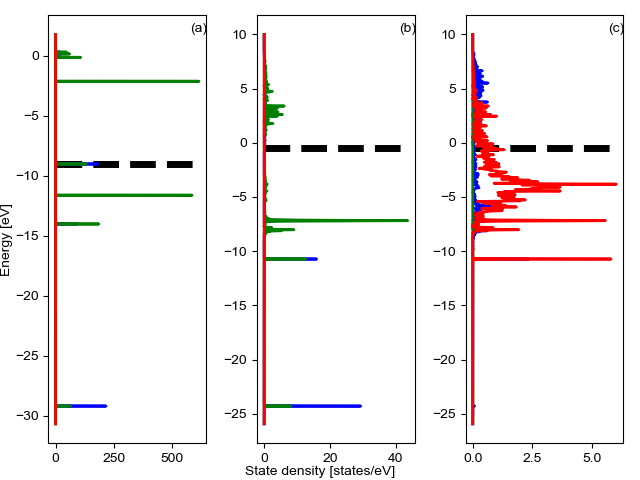
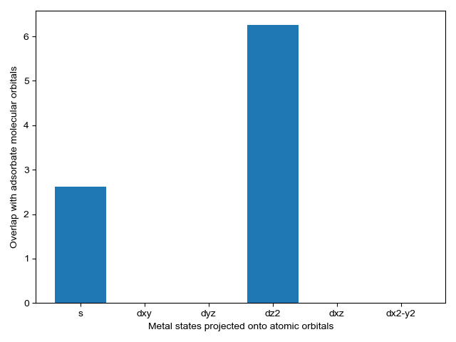

Note
Click here to download the full example code
Calculating orbital overlap using pdos_overlap¶
This example shows how calculate the overlap of gas phase molecular orbitals with an adsorbate and surface atom.
import os
import numpy as np
from pdos_overlap.vasp_dos import VASP_DOS
from pdos_overlap.plotting_tools import set_figure_settings
from pdos_overlap import get_adsorbate_indices
from pdos_overlap import PDOS_OVERLAP
from pdos_overlap.coordination import get_geometric_data
from pdos_overlap.overlap_population import OVERLAP_POPULATION
Load DOSCAR file¶
First we will, get the example data, load a DOSCAR file and use it to instantiate a VASP_DOS object.
gas = 'CO'
adsorbate = 'CO'
surface = 'Pt111'
set_figure_settings('paper')
np.set_printoptions(linewidth=100)
#These files are too large to store in the examples directory
lobster_path = r'C:\Users\lansf\Documents\Data\PROBE_PDOS\lobster_files'
GAS_DOSCAR = os.path.join(lobster_path, gas + '/DOSCAR.lobster')
GAS_CONTCAR = os.path.join(lobster_path, gas + '/CONTCAR')
ADSORBATE_DOSCAR = os.path.join(lobster_path, 'gas+Pt_G.03_noW/'+surface + '+'\
+ adsorbate + '/DOSCAR.lobster')
ADSORBATE_CONTCAR = os.path.join(lobster_path, 'gas+Ptnano/'+surface + '+'\
+ adsorbate + '/CONTCAR')
Generate VASP_DOS objects¶
VASP_DOS objects for both the gas (vacuum) and the adsorbate+surface system
GAS_PDOS = VASP_DOS(GAS_DOSCAR)
REFERENCE_PDOS = VASP_DOS(ADSORBATE_DOSCAR)
Get adsorbate and site indices and initialize PDOS_OVERLAP object¶
This method utilizes two VASP_DOS objects, a gas and an adsorption system. It uses the adosorbtion system (REFERENCE_PDOS) to map gas molecular orbitals to adsorbate molecular orbitals. It then calculates the adsorption site atomic orbital energy overlaps with the adsorbate molecular orbital energies.
reference_indices, site_indices = get_adsorbate_indices(GAS_CONTCAR\
, ADSORBATE_CONTCAR)
#Initialize Coordination object. Repeat is necessary so it doesn't count itself
CO_overlap = PDOS_OVERLAP(GAS_PDOS, REFERENCE_PDOS, reference_indices\
, site_indices, min_occupation=1.5\
, upshift=0.5, energy_weight=4)
Plot projected density¶
We plot the projected density of the gas, adsorbate, and adsorption site.
CO_overlap.plot_projected_density()
- 


Out:
C:\Users\lansf\Box Sync\Synced_Files\Coding\Python\Github\pdos_overlap\pdos_overlap\pdos_overlap.py:933: UserWarning: Matplotlib is currently using agg, which is a non-GUI backend, so cannot show the figure.
plt.show()
C:\Users\lansf\Box Sync\Synced_Files\Coding\Python\Github\pdos_overlap\pdos_overlap\pdos_overlap.py:933: UserWarning: Matplotlib is currently using agg, which is a non-GUI backend, so cannot show the figure.
plt.show()
C:\Users\lansf\Box Sync\Synced_Files\Coding\Python\Github\pdos_overlap\pdos_overlap\pdos_overlap.py:933: UserWarning: Matplotlib is currently using agg, which is a non-GUI backend, so cannot show the figure.
plt.show()
Find the optimal upshift factor¶
The optimal upshift factor shifts the molecular orbital energies to minimize the sum the orbital scores used in matching gas and adsorbate orbitals. This has the effect of increasing certainty and roughly corresponds to the average shift in molecular orbital energies when a gas adsorbs to the surface as a fraction of the fermi energy.
optimized_upshift = CO_overlap.optimize_energy_shift(bound=[-0.5,1.5]\
, reset=True, plot=True)
print(optimized_upshift)

Out:
C:\Users\lansf\Box Sync\Synced_Files\Coding\Python\Github\pdos_overlap\pdos_overlap\pdos_overlap.py:847: UserWarning: Matplotlib is currently using agg, which is a non-GUI backend, so cannot show the figure.
plt.show()
0.07276955934945231
Print orbital CO_overlap attributes¶
Differences in features are used in computing orbital scores. Scores are used to map gas molecular orbitals ot adsorbate molecular orbitals.
print('Print molecular gas and adsorbate orbital features, respectively.')
print(CO_overlap.gas_features)
print(CO_overlap.adsorbate_features)
print('#####################################################################')
print('Orbital matching scores')
print(CO_overlap.orbital_scores)
print('#####################################################################')
print('Gas to adsorbate indices and band centers')
print(CO_overlap.gas_2_adsorbate)
Out:
Print molecular gas and adsorbate orbital features, respectively.
[[-28.54994612 0.76973977 0. 0.23026023 0. ]
[-13.3783458 0.34039071 0. 0.65960929 0. ]
[-10.97734764 0. 0.5 0. 0.5 ]
[ -8.37694491 0.57635593 0. 0.42364407 0. ]
[ -1.48194605 0. 0.5 0. 0.5 ]
[ 0.51275403 0.31496024 0. 0.68503976 0. ]]
[[-2.82873275e+01 7.70153547e-01 0.00000000e+00 2.29846453e-01 0.00000000e+00]
[-1.46713584e+01 5.39389355e-01 0.00000000e+00 4.60610645e-01 0.00000000e+00]
[-1.20104155e+01 2.08571786e-01 2.92481559e-05 7.91311124e-01 8.78417147e-05]
[-1.11485114e+01 6.44919366e-06 5.00150936e-01 1.69565719e-05 4.99825658e-01]
[-3.19178957e+00 1.79067127e-01 3.06957835e-01 2.06774554e-01 3.07200484e-01]]
#####################################################################
Orbital matching scores
[[9.99020963e-01 2.84303840e-02 1.48947982e-04 5.34777828e-07 1.87782615e-06]
[5.35431899e-08 4.31399273e-01 6.46144705e-01 9.77533722e-06 2.91189383e-05]
[1.64176368e-10 1.42226134e-03 1.10137128e-03 9.98438342e-01 1.65453393e-02]
[3.60278376e-08 1.89161744e-01 3.87266785e-02 4.46566123e-06 3.60456775e-03]
[3.02340888e-09 1.24464111e-04 1.55284375e-04 1.82790929e-01 3.97738194e-01]
[1.25497454e-07 1.37556353e-02 8.20776547e-02 2.35004518e-06 1.27586289e-02]]
#####################################################################
Gas to adsorbate indices and band centers
[[ 0. 0. -29.20627653 -28.63020717]
[ 1. 2. -14.03467621 -12.35329515]
[ 2. 3. -11.63367805 -11.49139105]
[ 3. 1. -9.03327532 -15.01423802]
[ 4. 4. -2.13827646 -3.53466921]
[ 5. 2. -0.14357638 -12.35329515]]
Identify bonding orbitals¶
We calcluate the amount of density for each orbital that is in a bonding region We can do this both for the gas and for the adsorbate
#gas
COOPCAR_CO = os.path.join(lobster_path, gas + '/COOPCAR.lobster')
POP_CO = OVERLAP_POPULATION(COOPCAR_CO)
bonding_fraction = POP_CO.get_bonding_fraction(CO_overlap.gas_orbital_indices\
, CO_overlap.GAS_PDOS.get_energies()\
, set_antibonding_zero=False)
print('Gas bonding fraction')
print(bonding_fraction)
#adsorbate
COOPCAR_CO = os.path.join(lobster_path, 'gas+Pt_G.03_noW/'+surface + '+'\
+ adsorbate + '/COOPCAR.lobster')
POP_CO = OVERLAP_POPULATION(COOPCAR_CO)
bonding_fraction = POP_CO.get_bonding_fraction(CO_overlap.adsorbate_orbital_indices\
, CO_overlap.REFERENCE_PDOS.get_energies()\
, set_antibonding_zero=True
, emax = CO_overlap.REFERENCE_PDOS.e_fermi)
print('Adsorbate bonding fraction')
print(bonding_fraction)
Out:
Gas bonding fraction
[0.33390889559640663, 0.05000879480760805, 0.4167793652668387, -0.24333205768916177, -0.8939664918105517, -3.3284633768987364]
Adsorbate bonding fraction
[0.34507779467786953, 0.23978212303695395, 0.09395854678697194, 0.5027243012494749, 0.10317189667648151]
Plot energy overlap¶
We select energy overlap histograms with the adsorbate molecular orbitals that influence spectra. Gas orbitals 1,2, and 3 interact with the surface.
gas_indices = [i for i in range(5) if CO_overlap.gas_2_adsorbate[i][0] in [1,2,3]]
adsorbate_indices = [CO_overlap.gas_2_adsorbate[gas_indices,1].astype('int')]
CO_overlap.plot_energy_overlap(adsorbate_indices)


- 
Out:
C:\Users\lansf\Box Sync\Synced_Files\Coding\Python\Github\pdos_overlap\pdos_overlap\pdos_overlap.py:867: FutureWarning: Using a non-tuple sequence for multidimensional indexing is deprecated; use `arr[tuple(seq)]` instead of `arr[seq]`. In the future this will be interpreted as an array index, `arr[np.array(seq)]`, which will result either in an error or a different result.
energy_overlap = self.energy_overlap[indices]
C:\Users\lansf\Box Sync\Synced_Files\Coding\Python\Github\pdos_overlap\pdos_overlap\pdos_overlap.py:878: UserWarning: Matplotlib is currently using agg, which is a non-GUI backend, so cannot show the figure.
plt.show()
Print orbital interactions¶
Plot orbital interaction of the first gas molecular orbital with a surface s, pz, and dz2 orbitals. These are identified from first figure above
example_path = r'C:\Users\lansf\Documents\Data\PROBE_PDOS\vasp_dos_files'
nano = 'Pt44'
nano_DOSCAR = os.path.join(example_path, nano + '/DOSCAR')
nano_CONTCAR = os.path.join(example_path, nano + '/CONTCAR')
#obtain atom indices and atom type as 'surface' or 'bulk'
nano_indices, GCNs, atom_types = get_geometric_data(nano_CONTCAR)
#initialize a PDOS object for the nanoparticle
nano_PDOS = VASP_DOS(nano_DOSCAR)
#calculate orbital interactions
BULK_DOSCAR = os.path.join(example_path,'Pt_nano/Pt147/DOSCAR')
# VASP_DOS objects for both the gas (vacuum) and the adsorbate+surface system
GAS_PDOS = VASP_DOS(GAS_DOSCAR)
REFERENCE_PDOS = VASP_DOS(ADSORBATE_DOSCAR)
BULK_PDOS = VASP_DOS(BULK_DOSCAR)
print('Interactions with 4sigma orbital')
orbital_interaction = CO_overlap.calculate_orbital_interaction(gas_indices[0]\
, nano_PDOS, nano_indices[atom_types[...] == 'surface'][0]\
, ['s','pz','dz2'], BULK_PDOS, bulk_atom=43\
, sum_density=False, sum_spin=True)
print(orbital_interaction)
print('Interactions with 1pi orbital')
orbital_interaction = CO_overlap.calculate_orbital_interaction(gas_indices[1]\
, nano_PDOS, nano_indices[atom_types[...] == 'surface'][0]\
, ['dyz','dxz'], BULK_PDOS, bulk_atom=43\
, sum_density=False, sum_spin=True)
print(orbital_interaction)
print('Interactions with 5sigma orbital')
orbital_interaction = CO_overlap.calculate_orbital_interaction(gas_indices[2]\
, nano_PDOS, nano_indices[atom_types[...] == 'surface'][0]\
, ['s','pz','dz2'], BULK_PDOS, bulk_atom=43\
, sum_density=False, sum_spin=True)
print(orbital_interaction)
Out:
Interactions with 4sigma orbital
C:\Users\lansf\Box Sync\Synced_Files\Coding\Python\Github\pdos_overlap\pdos_overlap\pdos_overlap.py:573: RuntimeWarning: invalid value encountered in true_divide
* np.trapz(TOTAL_PDOS, energies) )
[-0.14607233 nan -0.09274738]
Interactions with 1pi orbital
[-0.22319773 -0.13182552]
Interactions with 5sigma orbital
[-0.16803452 nan -0.10557953]
Total running time of the script: ( 0 minutes 14.735 seconds)